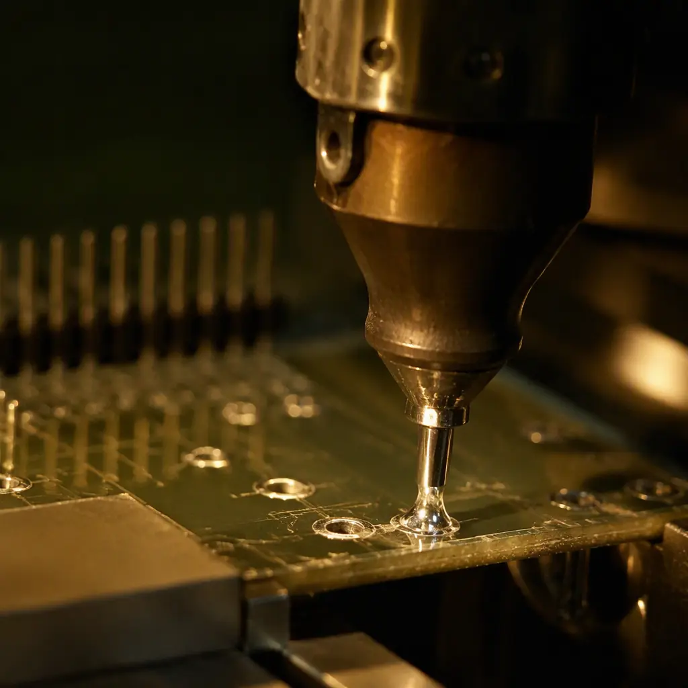

Through-hole components — connectors, transformers, large capacitors, terminal blocks — remain essential in power electronics, industrial controls, and automotive PCBs. But when it comes to soldering them at scale, you have two fundamentally different process choices: wave soldering and selective soldering. Choosing wrong adds $0.08–$0.25 per joint in unnecessary cost or compromises joint quality on mixed-technology boards. This guide compares both methods on cost, quality, throughput, and design constraints — with decision criteria you can apply to your next BOM.
At Huaxing PCBA, we operate 4 wave soldering lines and 2 selective soldering machines across our Shenzhen facility, processing through-hole assemblies for automotive, industrial, and medical customers at IPC Class 2 and Class 3 standards. Here's how to decide which process your project needs.
How Wave Soldering Works
Wave soldering is a bulk process where the entire underside of a populated PCB passes over a molten solder wave. The board travels on a conveyor at a controlled angle and speed through three zones: flux application, preheating, and the solder wave itself. Solder wets all exposed metal surfaces — component leads and PCB pads — forming joints simultaneously across every through-hole location on the board.
Process Parameters That Determine Quality
Wave soldering quality depends on five controllable variables: solder temperature (typically 250–260°C for lead-free SAC305 alloy), conveyor speed (0.8–1.5 m/min), preheat profile (100–130°C topside before wave contact), flux type (no-clean, water-soluble, or rosin-based), and wave height/pump speed. The interaction between conveyor speed and wave contact time is critical: 2–4 seconds of contact time produces optimal hole fill. Faster = insufficient wetting; slower = thermal damage to SMD components on the underside. For a detailed breakdown of assembly quality standards, read our PCB assembly process guide.
The Pallet Problem — When SMD Meets Through-Hole
Wave soldering was designed for single-sided through-hole boards. On modern mixed-technology PCBs — where SMD components populate the bottom side — the solder wave would flood and destroy those surface-mount parts. The solution: selective pallets (also called wave solder fixtures). These custom-machined carriers shield bottom-side SMD components while exposing only the through-hole pins that need soldering. A pallet costs $200–$600 (one-time) and must be designed for your specific board layout. For production volumes above 500 units, the pallet cost amortizes to near zero per board. For prototypes, selective soldering avoids this tooling cost entirely.
Throughput: The Wave Soldering Advantage
A single wave solder line processes 120–300 boards per hour, depending on board length and conveyor speed. This makes wave soldering the clear winner for high-volume, low-mix production — think automotive ECU assemblies running 10,000+ identical boards. The process cost per board is typically $0.15–$0.50 at volume, including amortized pallet cost and consumables (flux, solder replenishment, nitrogen if used).
How Selective Soldering Works
Selective soldering is a programmable, point-by-point process. A robotic nozzle — typically 3–12mm in diameter — moves to each through-hole location on the board, applies flux precisely to that pad, then delivers a miniature solder fountain only to that specific joint. There is no mask, no pallet, and no exposure of adjacent components. The entire process is nozzle-path-programmed from your PCB CAD data.

No Tooling, No Pallets — The Prototype Advantage
The biggest differentiator: selective soldering requires no mechanical tooling. The nozzle path is programmed from Gerber or ODB++ data in 15–30 minutes, and the program can be reused for repeat orders at zero additional cost. This eliminates the $200–$600 pallet investment per board design that wave soldering requires. For prototype runs (5–50 boards), low-volume production, or high-mix manufacturing environments, selective soldering is typically 40–60% cheaper than wave soldering when you include tooling amortization. Read our low-volume PCB assembly guide for the full economics.
Per-Joint Precision — Better Quality on Dense Boards
Selective soldering applies flux and solder to one joint at a time under full process control. Each joint gets its own temperature profile, its own flux quantity, and its own dwell time — typically 1.5–4 seconds per joint. This precision eliminates bridging between adjacent pins (a common wave soldering defect on fine-pitch connectors) and dramatically reduces thermal stress on temperature-sensitive components. Our IPC Class 3 customers in medical device manufacturing and aerospace/defense uniformly specify selective soldering for through-hole joints on high-reliability boards.
Throughput Tradeoff — Speed vs Flexibility
A selective soldering machine processes 3–8 joints per second (including nozzle travel time between joints). For a board with 100 through-hole pins, that's 15–35 seconds per board cycle time — or 100–240 boards per hour. This is slightly slower than wave soldering on a dedicated line, but the elimination of pallet loading/unloading and pallet cleaning often narrows the real-world gap. For boards with fewer than 30 through-hole joints, selective soldering can actually be faster end-to-end. See our PCB testing methods guide for quality verification of through-hole joints.
Head-to-Head Comparison
| Criterion | Wave Soldering | Selective Soldering |
|---|---|---|
| Tooling required | Pallet ($200–600 per design) | None (program-only) |
| Cost per joint (volume) | $0.002–$0.005 | $0.008–$0.015 |
| Cost per board (1,000 units) | $0.15–$0.50 | $0.80–$3.00 |
| Throughput | 120–300 boards/hr | 100–240 boards/hr |
| Setup time (new design) | 2–4 hrs (pallet fab + setup) | 0.5–1 hr (programming only) |
| Minimum viable volume | 300–500 units | 1 unit |
| Mixed-technology support | Requires pallet | Native (no masking needed) |
| Fine-pitch TH reliability | Moderate (bridging risk) | Excellent (per-joint control) |
| Thermal stress on SMD | High (full board exposed) | Minimal (localized heating) |
| Nitrogen capability | Optional | Standard (nozzle N2 blanket) |
Decision Rule: If your through-hole joint count exceeds 80 per board AND your annual volume exceeds 5,000 units, wave soldering with a pallet is the cost-optimal choice. Below either threshold, selective soldering wins on total cost — especially when you factor in pallet design, fabrication, and storage overhead.
Design Rules That Affect Process Choice
Your PCB layout directly constrains which soldering method is viable. Engineers who understand these rules during design avoid costly process changes later.
Keep-Out Zones Around Through-Hole Pins
Wave soldering requires a 3–5mm clearance zone around every through-hole pin on the bottom side — no SMD components, no vias, no exposed copper in the wave path. This is the pallet window opening. Selective soldering needs only 1.5–2mm clearance around each pin (the nozzle diameter plus tolerance). For dense mixed-technology boards — common in IoT and miniaturized designs — this 2× difference in keep-out zone often makes selective soldering the only viable process.
Connector Orientation Relative to Conveyor Direction
In wave soldering, through-hole connector rows must be oriented perpendicular to the conveyor direction. Parallel orientation creates solder shadows — the leading pins block solder from reaching the trailing pins. Selective soldering has no conveyor-direction constraint: the nozzle approaches each pin from the optimal angle. This is why boards with multiple connector orientations (e.g., edge-mounted I/O connectors facing different directions) almost always use selective soldering. For industrial control PCBs with multiple connector types, this design freedom alone justifies the selective soldering cost premium.
Component Height Clearance on the Bottom Side
Wave soldering pallets add 3–6mm of thickness to the board underside. Bottom-side components taller than 3mm require deeper pallet pockets — adding cost and complexity. Selective soldering has no bottom-side clearance constraint: the nozzle approaches from below with the board held in a simple fixture. For power electronics PCBs with tall electrolytic capacitors on both sides, selective soldering eliminates an entire class of pallet-design problems.
Process Selection Guide: 4 Scenarios
High-Volume, Single-Sided TH Board → Wave Soldering
Example: power supply board with 60 through-hole components, no bottom-side SMD, annual volume 20,000 units. Wave soldering: $0.25/board + $0.03/board amortized pallet = $0.28/board. Selective: ~$1.20/board. Wave wins. Our turnkey PCBA service handles these high-volume through-hole assemblies with inline AOI after wave.
Mixed-Technology, Medium Volume → Selective Soldering
Example: industrial controller with 40 SMD components + 25 through-hole connectors, annual volume 3,000 units. Wave requires custom pallet ($450 one-time) + process validation. Selective: program in 45 minutes, $0.90/board, no tooling. Selective wins on total cost and setup time. Read our IPC Class 2 vs Class 3 comparison for quality requirements on this type of mixed-technology board.
Prototype/Low-Volume, Any Board → Selective Soldering
For runs of 5–200 boards, the economics are unambiguous. Wave soldering's pallet cost alone ($200–$600) exceeds the total selective soldering cost for 100 boards (~$90–$300). Plus, selective soldering's program can be modified between revisions without new tooling. Our quick-turn PCB service uses selective soldering exclusively for through-hole on prototype orders — it's faster, cheaper, and more flexible for low volumes.
High-Reliability, Dense Connectors → Selective Soldering
For automotive PCBs with 100-pin ECU connectors at 2.54mm pitch, selective soldering with nitrogen blanket delivers zero-defect soldering that wave soldering cannot match. The nitrogen environment reduces dross formation and improves wetting on each individual joint. For IPC Class 3 and IATF 16949 requirements, this per-joint process control is non-negotiable. Our automotive line uses selective soldering exclusively for through-hole — the quality data supports it.
Solder Alloy Considerations
Both wave and selective soldering use the same solder alloys — typically SAC305 (Sn96.5/Ag3.0/Cu0.5) for lead-free RoHS compliance. However, selective soldering consumes significantly less solder per joint because the nozzle fountain is recirculated, while wave soldering continuously exposes a large bath surface to oxidation. Over a year of operation, a wave solder line's solder consumption (dross + replenishment) can be 3–5× higher than selective soldering for the same joint count. For RoHS compliance details, read our RoHS compliance guide. For surface finish compatibility — ENIG vs HASL vs OSP interact differently with each process — see our surface finish selection guide.
Summary: Match the Process to Your Volume and Board Complexity
The choice between wave and selective soldering is a function of three variables: annual volume, number of through-hole joints per board, and board complexity (mixed SMD/TH vs pure TH). For pure through-hole boards above 5,000 units/year, wave soldering is the cost champion. For everything else — prototypes, mixed-technology boards, low-to-medium volumes, and high-reliability applications — selective soldering wins on total cost, quality, and flexibility.
At Huaxing PCBA, our NPI engineers evaluate every new BOM against these criteria and recommend the optimal process. We run both wave and selective lines in-house, so you get the right process for your volume and design — not the one our factory happens to have. Learn about PCB cost factors or contact us with your Gerber files for a process-specific assembly quote.